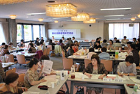
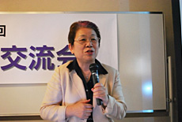

|
|
||||||||||||
| 【日 時】 6月1日(金)10:30～15:15 【場 所】 埼玉会館2階ラウンジ 【参加団体】 県内消費者団体：24団体(62人) 資料提供参加：11団体  上尾市消団連、さいたま市消団連、所沢市消団連、狭山市消団連、埼玉県西部地区消費者団体活動推進世話人会、所沢市連合婦人会、桶川市くらしの会、加須市くらしの会、久喜市くらしの会、くまがやくらしの会、白岡町くらしの会、行田市くらしの会、越谷市消費生活研究会、幸手市くらしの会、三郷市くらしの会、めぬまくらしの会、NPO法人埼玉消費者被害をなくす会、埼玉県地域婦人会連合会、新日本婦人の会埼玉県本部、埼玉母親大会連絡会、埼玉公団住宅自治会協議会、埼玉県生協ネットワーク協議会、埼玉県生活協同組合連合会、埼玉県消費者団体連絡会 【行政担当課】 埼玉県消費生活課、埼玉県消費生活支援センター川越 ■講 演 「つながっていて良かった！」～地域の消費者団体がもっと元気であるために～ 講師：全国消費者団体連絡会事務局長 阿南 久さん  最初に｢全国消団連｣の役割、活動について紹介がありました。昨年度の主な取り組みとして、｢消費者政策検討会｣開催、地方消費者行政充実強化、集団的消費者被害回復に係る訴訟制度実現、東日本大震災と原発事故等の経過について話されました。この交流会のねらいとなる、消費者が主体的に行動するためには必要なことは主には二つあり、一つは“情報共有”と“消費者力アップ”、もうひとつは“連帯”と“協働”です。消費者団体には、消費生活に関する情報の収集や提供、意見の表明、消費者の被害防止と救済のための活動、消費生活の安定と向上を図るという役割があります。次に、PIO-NETや国民生活センターのデータから、消費者被害の現状に触れ、積極的に安全な情報の確保に努めることの具体的な方法や重要性について説明。消費者主役の社会づくりを目指し、2009年消費者庁・消費者委員会が創設されましたが、消費者の権利擁護や自立支援に関しての認知度や信頼度はまだ高くありません。安心してくらせる埼玉をつくるために、連帯と協働の推進役として具体的になすべき事の提案と、消費者関連法案の成立と地方消費者行政の財政基盤の確保のために世論形成や働きかけのお願いします。 ※東京電力との懇談や交渉についての質問がありました。 ◆報 告（埼玉消団連 岩岡事務長） 「公共料金に関する研究会」からの情報提供として、公共料金の決まり方と、東京電力料金値上げに関わる主要なチェックポイントについてお話ししました。 ◆まとめ・閉会挨拶（宮前幹事） くらしの全てが消費者課題です。消費者庁が出来て3年ですが、これからまだ行政に働きかけ、力を合わせて解決していきましょう。世代交代しても、引き続きこのまま頑張りましょう。 ◆交流 グループに分かれて活動交流・情報交換 ＜第1グループ＞（9名）
＜第2グループ＞（9名）
＜第3グループ＞（9名）
＜第4グループ＞（9名）
＜第5グループ＞（8名）
＜第6グループ＞（8名）
|
||||||||||||